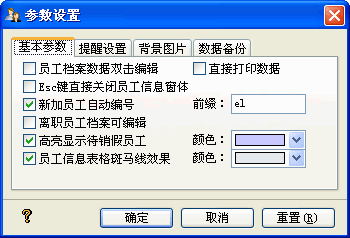

☆ 秋风人事档案管理系统试用版与正式版有什么区别？
秋风人事档案管理系统是一款共享软件，软件的开发与升级需要您的支援；试用版只能添加25条数据，
主窗体标题会有(试用版)字串，且在打印员工档案的公司信息处，会加上"试用版"字样，试用版不能注册。
正式版在未注册时，为未注册版；未注册版会在主窗口标题处加上(未注册版)字串，其它与试用版一样。
正式版注册后，不再有任何功能限制，且能够免费升级后续版本，及获到技术支持。
若您需要正式版，请与秋风联系购买，价格为￥200元每个拷贝，并提供您的注册邮件及公司名称，秋风会将
您的信息做为客户资料记录，将正式版及注册码发给您。
☆ 我想在员工信息列表中，双击编辑员工数据，怎么做？
您只在在[系统]->[选项]->[基本参数]中勾选[双击编辑数据]就可以了。
☆ [选项]->[基本参数]，都表示些什么意思？ 
员工档案数据双击编辑：您在员工信息列表双击选中的员工数据时，它默认操作是显示当前的员工信息；若您想要双击后员工信息处于可编辑状态，则勾选此选项。
直接打印数据：此选项之功能在于，若不勾选，则在执行打印操作时，先显示打印预览窗体；若是勾选，则直接打印您要打印的数据。
Esc键直接关闭员工信息窗体：秋风人事档案管理系统的弹出窗体，都可以用Esc键快捷关闭；在员工信息窗体，若处于浏览状态，则可以关闭，倘处于添加或编辑状态，则Esc键先执行取消操作，然后关闭窗体。此选项是在添加或编辑状态时，Esc键直接关闭员工信息窗体。
新加员工自动编号：此选项用在添加新员工中。您可以在这里设定工号前缀，则添加新员工时，员工工号由此关缀加上已有工号最大值加1为新的初始工号。
离职人员档案可编辑：此选项决定离职人员档案是否可以编辑。
若不设定，则离职人员档案不能被编辑。
高亮显示待销假员工：您在对员工进行请假操作后，若其销假日期小于等于当前日期，则员工记录背景颜色会显示为您设定的颜色。
员工信息表格斑马线效果：主界面员工信息表格，以间隔条状颜色显示，颜色值可以自定义。
☆ 我如何取消软件开始弹出的信息提醒窗体？
您只在在[系统]->[选项]->[提醒设置]中不勾选[启用事件提醒]就可以了。
☆ 我想对员工信息排序查看，如何操作？
在主窗体的员工信息表格头，您可以点击的，信息默认以工号升序排列。您每点击一次标题栏，它会以当前栏的升序、降序及还原以工号
或者ID号升序排列状态，同时标题栏信息会有相应符号显示。
☆ 我可否自定义员工信息表格所显示的列数据？
可以。您可以在[档案管理]->[字段显示]或右键菜单的[字段显示]中设定，其中工号和姓名是必须显示的；这里您也可以勾选[单元格宽度自适应]选项。
☆ 我能否自定义员工信息表格所显示的列项目内容？
可以。您可以在[档案管理]->[字段显示]或右键菜单的[字段显示]中
，双击要修改的项目名字设定，其中工号和姓名不能被修改。改过后，点击[确定]保存。
☆ 我想连续添加或者编辑员工数据，怎么做？
您只需要在员工信息窗体中勾选[允许连续添加、编辑]就可以了。
☆ 我可以从外部Excel文件导出员工档案数据吗？
您可以在[数据维护]->[导入Excel]处导入Excel文件中的员工档案信息量。
☆
我添加、编辑员工信息时，年龄、离职日期怎么不能设定？
年龄是由出生日期计算的，离职日期是由[人事变动]->[离职]操作写入的。
☆ 我能否一次删除多条员工信息？
秋风人事档案管理系统允许您一次删除多条信息。您可以用Ctrl+鼠标右键选取多条，或者在右键菜单的[全选]全部选中，然后执行删除操作，能能删去多条了。 |